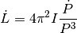
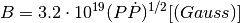
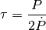

Bases: object
Magnetic dipole spin-down model for a pulsar.
Reference: http://www.cv.nrao.edu/course/astr534/Pulsars.html
| Parameters: | P : Quantity
P_dot : Quantity
I : Quantity
R : Quantity
|
|---|
Attributes Summary
| luminosity_spindown | Spin-down luminosity. |
| magnetic_field | Magnetic field strength at the polar cap. |
| tau | Characteristic age. |
Attributes Documentation
Spin-down luminosity.
Notes
The spin-down luminosity is given by:

Magnetic field strength at the polar cap.
Notes
The magnetic field is given by:

Characteristic age.
Notes
The characteristic age is given by:
